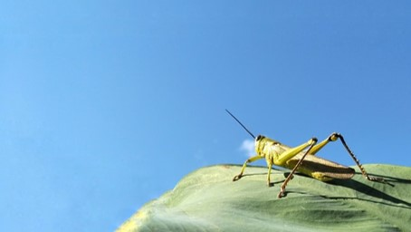
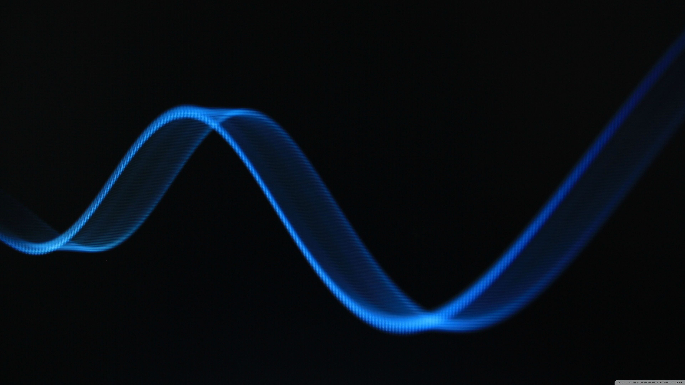
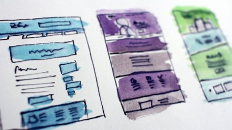

Optical NOx Sensor Device
Hazardous-gas detection with a Raspberry Pi.
View repository ↗A selection of public repositories spanning scientific models, applied computing, and software tooling.
Hazardous-gas detection with a Raspberry Pi.
View repository ↗A logged and documented Linux backup service.
View repository ↗
A NetLogo model with behavioral phase change.
View repository ↗Pandemic modeling for Austria, 2021.
View repository ↗Bird classification using a convolutional neural network.
View repository ↗
Predicting missing values in a dataset.
View repository ↗
Combining SQL, NoSQL, and cloud-based databases.
View repository ↗Simulation of a satellite trajectory around the sun.
View repository ↗Simulation of a harmonically driven pendulum.
View repository ↗